Puedes entrar en este santuario desde que llegas a la región de la torre de Eldin. Para llegar a él tendrás que hacerlo sobre un vagón de la mina a través de unos railes que te llevan directamente a la entrada situada en la isla cangrejo. Ve al noreste del Lago Darunia para encontrar el comienzo de la vía junto a un vagón.
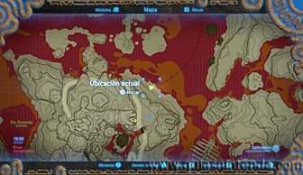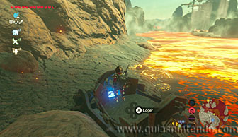
Sube a él y coloca una bomba en la parte trasera. Si la explotas harás que el vagón avance rápidamente por la vía. Al cabo de unos segundos irá perdiendo velocidad hasta que pare de nuevo, entonces tendrás que repetir el proceso varias veces hasta llegar a tu objetivo.
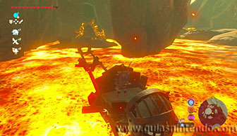
Una vez dentro avanza y sube los pinchos con el imán para poder pasar por debajo. Llegarás a una encrucijada, pero con un solo camino por donde avanzar de momento.
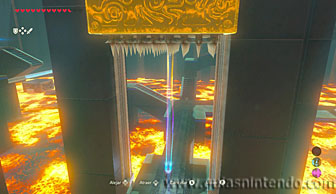
Coloca los bloques metálicos (con el imán) para poder llegar a la antorcha y el pebetero con el fuego azul. Después enciende la antorcha de abajo para abrir una puerta y desbloquear un nuevo camino.
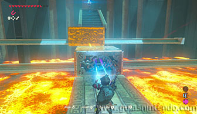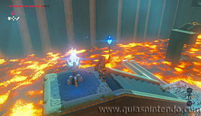
Antes de irte, puedes colocar los bloques metálicos de tal manera que te permitan llegar al cofre (contiene un Arco real).
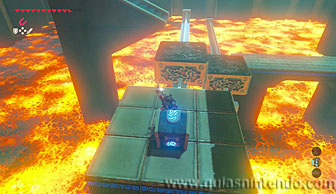
Sigue por el camino que se ha abierto con cuidado de que el agua no toque tu antorcha encendida y la apague. Agáchate para pasar por debajo de los chorros sin que se moje.
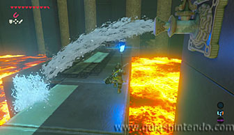
Al final del camino puedes encender otro pebetero y se pondrá en marcha una plataforma a lo lejos. Prende una flecha con el fuego azul (acercándote con el arco puesto a él) y podrás disparar al pebetero del fondo (el que está sobre la plataforma que ha comenzado a moverse) y así encenderlo para que aparezcan unas escaleras en la encrucijada anterior.
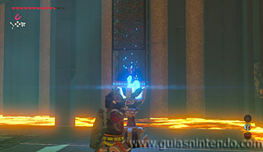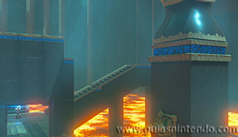
Regresa a la encrucijada y sube las escaleras, debes estar preparado con el imán ya que nada más pisar el interruptor que hay en el suelo caerá una bola metálica con pinchos. Atrápala y lánzala fuera del camino para poder continuar.
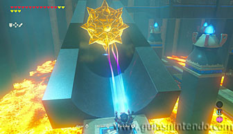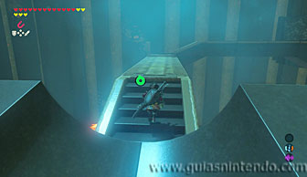
Llegarás a la plataforma que sube y baja y que encendiste desde lo lejos con una flecha. Si esperas que suba te servirá para encender tu antorcha de nuevo. Antes de hacerlo no es mala idea acabar con los miniguardianes que hay a continuación. Aquí hay dos cofres con un mandoble de fuego y un gran núcleo ancestral.
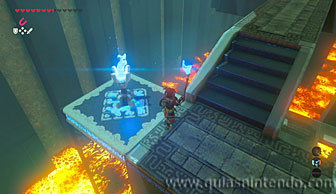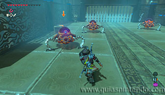
Después solo tienes que ir encendiendo los pebeteros para que se abran las puertas. Sin embargo, en el segundo te encontrarás que debes encender tres al mismo tiempo y que dos se apagan en cuanto los enciendes por culpa de un chorro de agua que se activa. Debes encender los dos pebeteros a la vez, puedes hacerlo con una flecha que pase por los dos pebeteros de un disparo o paralizar uno de los surtidores y encender rápidamente y en primer el pebetero que le corresponde.
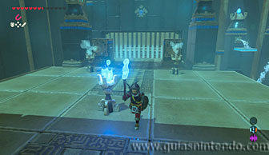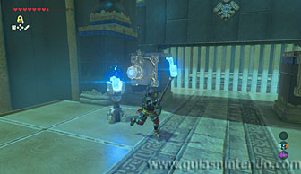
Así podrás llegar a una nueva zona donde debes encender otros dos pebeteros al mismo tiempo. El único modo de hacerlo ahora es usar una flecha con fuego azul y disparando desde el centro cuando estén alineadas.
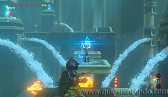
Al lograrlo aparecerán unas corrientes de aire ascendente. Úsalas para colocarte sobre la segunda plataforma y desde ella dispara otra flecha al pebetero que se ve enfrente.
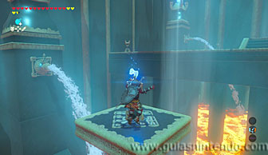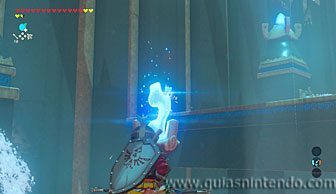
Después sigue avanzando y enciende otro nuevo pebetero (sobre un bloque de metal que puedes mover con el imán).
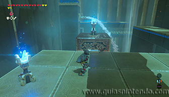
Tienes que pasar ese pebetero al otro extremo, pero como hay agua tendrás que paralizar primero el surtidor y rápidamente cambiar al imán. En breve necesitarás encender tu antorcha en este pebetero.
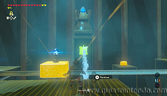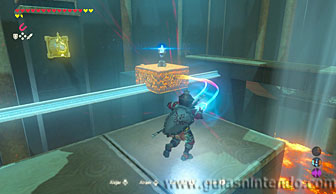
Ahora puedes coger dos cofres. Uno atrayéndolo con el imán y el otro planeando, puedes regresar fácilmente gracias a la corriente de aire ascendente. Contienen una Rupia plateada y una espada del bosque.
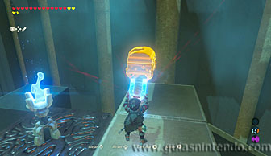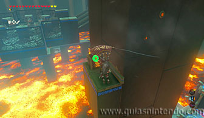
Sigue el camino y verás más guardianes. Si quemas las hojas que tienen debajo los destruirás sin esfuerzo. Después de hacerlo ve al pebetero que cruzaste al otro lado del surtidor y enciende tu antorcha.
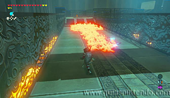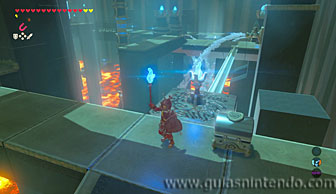
Continúa por donde los miniguardianes muertos y encontrarás un último cofre con 10 flechas de hielo y más pebeteros. Enciende el pebetero que está solo y verás otros 7 colocados en círculo. Tienes que encenderlos a la vez para que no se apaguen. La única forma de hacerlo es realizar un giro con la antorcha en la mano desde el centro del círculo.
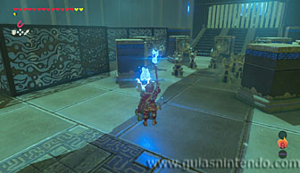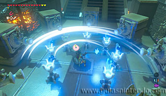
Cuando llegues al altar podrás examinarlo para obtener un símbolo de valía.
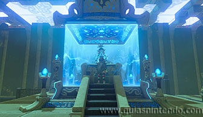